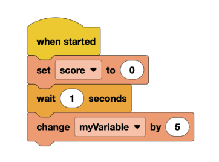
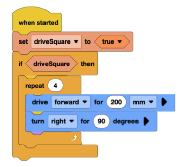
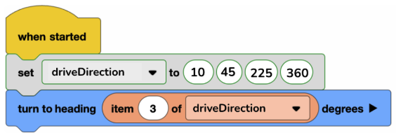

Lesson 10: Variables and Storing Information
Objective(s)
- Learn what variables, booleans, and lists are and how to use them in VEXcode
- Use variables to complete the in-class tasks
Materials Needed
- Computers (1–2 per group)
- Basebots
- VEXcode IQ website
- Notebooks and writing utensils for each student
Lesson Procedure
1. Overview
- In this lesson, students will gain an understanding of what variables are, how to store information in variables, and how to implement them into their code.
2. Getting Started
- Introduce variables:
- Use THESE NOTES and have the class take notes
3. Monitoring Progress
- Allow the students to go through a series of tasks to increase their familiarity with variables
- Have the students use their computers and set up a drivebase like they did in previous lessons. Make sure that the ports selected are correct!
Task 1: Numeric Variables
- Ask the students to create a program where a variable “score” (with a starting value of 0) increases by 5 after one second.
- The program might look like this:

Task 2: Booleans
- Ask the students to create a program where the robot drives in a square if a variable is true.
- The program might look like this:

Task 3: Lists
- Ask the students to create a program using lists that lets the robot turn in different directions based on the student’s choice.
- The program might look like this:

4. Wrapping Up
- Students will review what they learned in a fun class discussion.
- Students should work with their groups to try and answer questions about which type of variable should be used.
- Example questions:
- What type of variable should be used for an object’s speed?
- An object's speed?
- If an object should turn right?
- Storing different motor speeds?
- Conclude with having the groups answer: What’s the difference between a numeric variable, a Boolean variable, and a list?
Assessment
- Students understand what variables are, how different types are used, and why they are important.
- Students understand how to use variables to make their programs easier to understand.
Preparation for next class
In the next class, the students should review their notes about variables and explore using variables in more activities in their code.